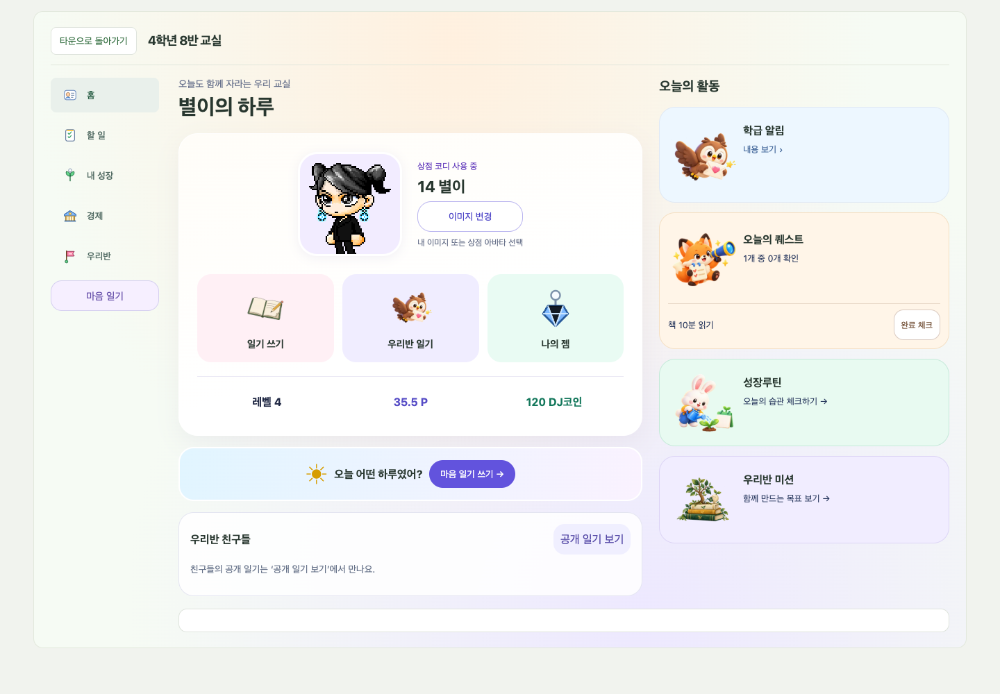
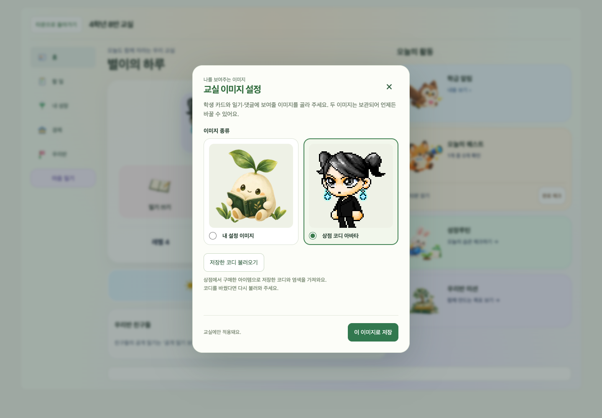
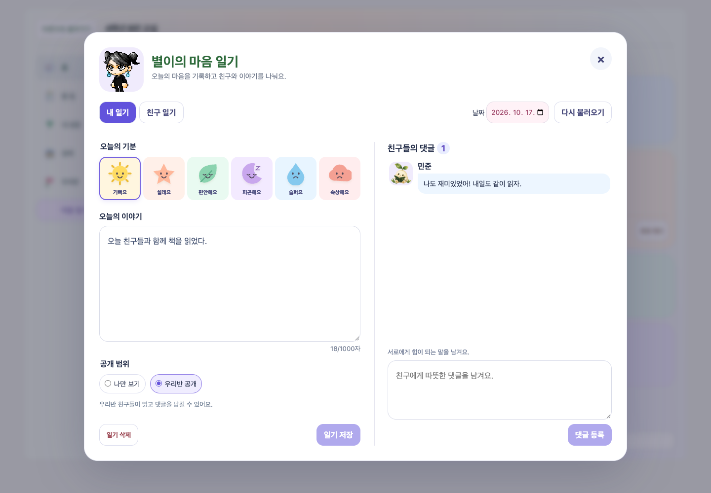

로컬 구현 완료 · npm run check 통과 · 운영 미배포
우리 교실 — 학생 카드와 마음 일기
학생용 교실 홈에서 일기를 쓰고, 같은 반에 공개한 일기에 댓글을 남길 수 있습니다. 내 설정 이미지와 상점에서 꾸민 아바타 중 선택한 이미지가 학생 카드·일기·댓글에 표시됩니다.
2026.10.17 · 아래 화면은 실제 프론트엔드를 합성 학생 데이터로 실행한 결과입니다.
학생 카드 홈
내 이미지와 레벨·포인트·DJ코인, 일기 바로가기, 서로 다른 캐릭터 활동 카드를 배치했습니다. 모바일에서는 학생 카드가 먼저 보입니다.

내 설정 이미지 또는 상점 코디
두 이미지를 보관해 바꿔 쓸 수 있습니다. 코디를 변경했다면 ‘저장한 코디 불러오기’로 갱신합니다.

마음 일기와 친구 댓글
하루 한 편, 6가지 감정, 기본 ‘나만 보기’입니다. ‘우리반 공개’를 선택하면 같은 반 친구들이 읽고 댓글을 남길 수 있습니다. 본인 글·댓글을 수정·삭제하고, 교사는 공개 글·댓글을 숨기거나 다시 표시할 수 있습니다.

모바일 화면
일기와 댓글을 세로로 배치했습니다. 아래는 같은 화면의 위·아래 스크롤 위치입니다.
검증과 적용 범위
- 전체 npm run check 통과. 76개 역할·화면 크기 조합, 아바타 선택, 일기·댓글 흐름을 검증했습니다.
- 로컬 Firebase 에뮬레이터에서 타계정·타반·비공개 접근 차단, 중복 댓글, 동시 수정 충돌, 교사 숨김, 삭제 후 재작성을 검증했습니다.
- 일기·댓글은 기존 포인트와 랭킹을 변경하지 않습니다.
- 운영 배포 및 운영 학생 데이터 변경은 하지 않았습니다. 로그인 후 타운 진입 경로는 유지하며, 우리 교실 첫 화면에 적용했습니다.